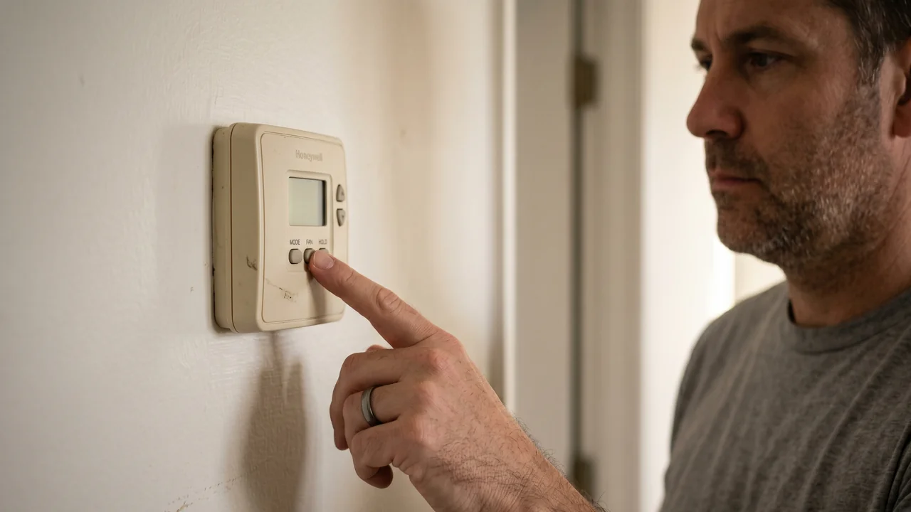

Advertising Disclosure: This site may receive compensation for service connections made through this page. Content is editorially independent.
Your thermostat screen is blank and the AC will not start. Replace the batteries first — that solves roughly 7 out of 10 cases. Slide the thermostat faceplate off the wall plate, swap in fresh AA or AAA cells, and reinstall. If the screen lights up, you are done. If it stays dark, the thermostat is not receiving its 24-volt signal from the HVAC system — which almost always means a condensate float switch has tripped (clogged drain), a low-voltage fuse has blown, or a transformer has failed. None of those are homeowner-fixable. Set any backup cooling you have (a window unit, fans) and call a qualified HVAC technician. Do not kill the power by going to your service panel to flip the breaker, do not open the furnace or air handler access panels, and do not try to reset any safety switch yourself.
The only interior-access step a homeowner should take on a blank thermostat is replacing the batteries. HVAC control circuits carry 24 volts AC, and the wiring runs directly to systems that operate at 240 volts — a short created by trying to bridge or bypass thermostat terminals can damage the control board, burn out the transformer, or create a fire hazard. Do not try to kill the power by going to your service panel to flip the breaker to "reset" anything — that is not how the system works, and it will not clear a tripped safety switch. Do not open the furnace or air handler access panels. Do not try to reset a float switch yourself; it sits alongside live high-voltage wiring inside the air handler. Refrigerant work (if a diagnosis reveals a sealed-system problem) is federally regulated under EPA Section 608 — certification is legally required. When in doubt, call a technician.
Why the Screen Goes Blank in the First Place
A residential thermostat runs on one of two power sources: its own batteries (usually two AA or AAA cells behind the faceplate), or the HVAC system's 24-volt control circuit (often called the "R" and "C" wires running up from the furnace or air handler). Many thermostats use both — batteries as a primary source and the 24V as a backup, or vice versa. Smart thermostats almost always rely on the 24V with the batteries as a fallback for settings retention.
When the screen goes dark, one of those two power paths has failed. If the batteries are dead and the thermostat is battery-first, the display drops instantly. If the batteries are fine but the 24V signal is interrupted, a 24V-dependent thermostat goes blank — and the interruption is almost always a safety device doing its job. Understanding which path failed tells you whether the fix is a $5 battery or a service call.
The 5 Causes of a Blank Thermostat (In Order of Frequency)
1. Dead Batteries (Most Common — The Fix You Can Actually Make)
Most residential thermostats take two AA or two AAA batteries, and they typically last 1 to 2 years under normal use. Most thermostats show a low-battery warning icon for weeks before the cells fully die, but after a power interruption or if the warning was simply overlooked, the display just goes blank. Swap in fresh batteries; if the screen comes back within a few seconds, you are done.
2. Tripped Condensate Float Switch (Very Common in Humid Climates)
Modern HVAC systems include a float switch that shuts down the entire system when the condensate drain pan fills with water — which happens when the drain line clogs with algae, dirt, or sludge. A tripped float switch interrupts the 24-volt signal to the thermostat, which is why a thermostat that draws power from the 24V circuit goes blank when this happens. It is not a malfunction; it is the system protecting your ceiling and walls from water damage. A technician needs to clear the drain, reset the float switch, and confirm the condensate path is flowing freely. This is a common failure in hot-humid climates like Gulfport and Houston where the drain line runs algae-heavy all summer. For the full water-damage angle, see our guide on how to stop HVAC water leaks before they ruin drywall and flooring.
3. Blown Low-Voltage Fuse on the Control Board
Furnace and air handler control boards include a small automotive-style low-voltage fuse (usually 3 amp or 5 amp) that protects the 24-volt circuit. The fuse blows when a short occurs anywhere on the thermostat wire or in the control circuit — commonly from a chewed wire in an attic (rodents), a stapled thermostat cable where the insulation has been pinched, or a miswired replacement thermostat. A blown fuse cuts the 24V supply, and the thermostat goes blank. Replacement is a $2 fuse but requires opening the control board access panel — a technician job because the cabinet also contains high-voltage wiring. Until the short itself is found, a replacement fuse will blow again within seconds.
4. Failed 24V Transformer
The 24-volt transformer steps the 120V or 240V line voltage down to the 24V that runs the thermostat and the control-circuit safety chain. Transformers fail over time from heat, age, or voltage surges — a common failure mode after a nearby lightning strike or a utility brownout. When the transformer fails, the 24V signal is gone and the thermostat goes blank. Transformer replacement is a technician job ($150 to $350 including the service call).
5. Failed Thermostat or Tripped Door Safety Switch
Less commonly, the thermostat itself has reached end of life — the LCD driver can fail after 15 to 20 years. Or the blower compartment door safety switch (a small plunger that cuts the 24V circuit when the access panel is removed) is stuck or broken, producing the same blank-screen symptom without anyone having touched the panel. Both are technician diagnoses — the technician takes a voltage reading at the thermostat base to confirm whether 24V is present at the wires.
Get connected with a technician in your ZIP code.
Call Now — (844) 582-1795Disclosure: We are a referral service and may receive compensation for qualified calls. Calls may be routed to an independent provider network and may be recorded. Pricing and availability vary by provider and location.
What You Can Safely Do Before Calling
The safe homeowner list on this symptom is deliberately short — one action, really. The battery swap resolves the majority of cases, and everything else routes through a technician.
- Confirm the display is truly blank. Tap the screen or press any button. Some modern thermostats dim their backlight to save power and wake on touch. If the screen does not respond, it is genuinely unpowered.
- Replace the thermostat batteries. Slide the faceplate off the wall plate (gently — it is designed to come off) or remove the battery cover on the side, note the battery size (AA or AAA), and install two fresh cells. If the screen lights up in a few seconds, you are done.
- Call a qualified HVAC technician if the screen is still blank. That is the entire list. Do not open the furnace or air handler access panels, do not try to reset a float switch, do not flip the breaker at your service panel trying to "reset" the system, do not jumper any thermostat terminals, and do not remove the thermostat base from the wall to inspect the wiring.
If you want to stay comfortable while you wait for the technician, turn on any ceiling fans (they run on regular line voltage, independent of the HVAC system) and open windows if outdoor air is cooler than indoor. For short waits on a very hot day in Laredo or Washington, a portable fan is your friend.
When to Stop and Call a Professional
Call a technician immediately if:
- The screen is still blank after a fresh battery swap. The 24V circuit is compromised — technician-only from here.
- You see any water around the indoor air handler or under the drain pan. The float switch almost certainly tripped for good reason. Water is the priority diagnosis.
- There is a burning smell anywhere near the furnace, air handler, or the thermostat. Leave the house, call the fire department, then call a technician.
- You see visible damage to the thermostat cable — chewed insulation, scorch marks at the baseboard, or the cable pulled from the wall. This is a likely short that blew the control-board fuse.
- The system was working fine until a lightning storm or utility power event. Transformer or control board damage is likely.
- You have infants, elderly family members, pets, or anyone with a heart or lung condition and indoor temperature is climbing into the 80s. Move them to a cooler location (a public cooling center, a neighbor, a mall) while a technician is dispatched.
For the full map of every AC failure mode and how they connect, see our complete AC troubleshooting guide. If your system is running but not cooling well after a battery swap, our guide on AC running but not cooling below 80° covers the next-layer diagnosis. If you are weighing whether a 15-year-old system is worth repairing vs replacing, read our honest 2026 HVAC cost guide first.
What a Technician Will Actually Check
A thorough diagnosis on a blank thermostat covers the whole 24V control chain — the technician should not just swap the thermostat and hope. Measurements that confirm the real cause:
- 24V reading at the thermostat base (R to C terminals). A technician's multimeter at the thermostat base confirms whether the 24V is reaching the thermostat at all. If yes, the thermostat itself is the issue; if no, the break is upstream.
- Float switch and drain inspection. The technician confirms the condensate drain is flowing, the float sits at the correct position, and the switch closes and opens as it should.
- Low-voltage fuse on the control board. After opening the air handler or furnace access panel (a technician-only step because of the live 120V/240V wiring inside), the technician inspects the 3A or 5A fuse. A blown fuse indicates a short somewhere on the thermostat cable that must be located before the fuse is replaced.
- 24V transformer output. A voltmeter on the transformer secondary terminals confirms whether the transformer is producing 24V. If not, the transformer is the repair.
- Door safety switch operation. The plunger on the blower-compartment access panel is verified to close when the panel is seated and open when it is removed.
- Thermostat wire continuity. If the short is in the cable (common failure in attics with rodents), a continuity test between the thermostat and the control board identifies it.
A technician who replaces the thermostat as the first move without measuring 24V at the base is guessing — ask for the voltage reading before approving any part swap.
What Repairs Cost in 2026
Pricing on this site is anchored to our complete 2026 HVAC Cost Guide, which is the single source of truth for every cost figure — no drift between articles.
- Diagnostic / service call: $65–$150 (often credited toward the repair if approved)
- Condensate drain clearing + float switch reset: $75–$250
- Low-voltage fuse replacement (plus locating the short): $100–$200 with service call
- 24V transformer replacement: $150–$350
- Thermostat replacement (smart): $150–$500
- Control board replacement: $200–$600
- Emergency / after-hours surcharge: $100–$300 added
Estimated ranges based on publicly available industry data and in sync with our complete cost guide. Actual costs vary by region, provider, and system.
Climate Matters: Where This Problem Shows Up Most
Hot-humid climates (Gulfport, Houston, the Gulf Coast): The dominant failure mode is a tripped float switch — heavy condensate output all summer combined with algae growth in the drain line means clogs are inevitable if the drain is not flushed annually. If your thermostat goes blank in July and you are in a humid climate, the drain is the first thing a technician will check. Preventive annual drain flushing (a technician tune-up task) almost eliminates this failure mode.
Hot-dry climates (Laredo, Phoenix, Las Vegas): Low condensate output means float-switch trips are rare. The more common cause here is a blown low-voltage fuse after a summer monsoon lightning event, or transformer failure from sustained heat loading. Whole-home surge protection at the service panel (a qualified electrician's job, $200-$500 installed) protects the control board from these events.
Mixed-humid climates (Washington DC, Atlanta, Charlotte): Both patterns show up — shoulder-season float-switch trips when the drain has been dormant all winter, and peak-summer transformer failures. Browse local service providers in Mississippi, Texas, or explore all service areas.
Trusted Industry Sources
The guidance in this article is consistent with published recommendations from:
- U.S. Department of Energy — Thermostats and Energy Savings
- EPA Section 608 — Refrigerant Handling Regulations
- ENERGY STAR Heating & Cooling
- U.S. CPSC — Home Electrical Safety
Don't wait — get a technician dispatched to your area.
Call Now — (844) 582-1795Disclosure: We are a referral service and may receive compensation for qualified calls. Calls may be routed to an independent provider network and may be recorded. Pricing and availability vary by provider and location.
Frequently Asked Questions
The most common cause is dead thermostat batteries — residential thermostats with LCD screens typically run on two AA or AAA cells that last 1 to 2 years. If a battery swap does not bring the display back, the thermostat is not receiving its 24-volt signal from the HVAC control board. That usually traces to one of four technician-diagnosed issues: a tripped condensate float switch (safety cutoff for a backed-up drain), a blown 3A or 5A low-voltage fuse on the furnace or air handler control board, a failed 24V transformer, or a tripped blower-compartment door safety switch. None of those are homeowner-fixable.
Most thermostats show a battery-low warning icon for weeks before the batteries fully die, but after a power interruption or if you missed the warning, the screen simply goes blank. Open the thermostat's battery compartment (usually by sliding the faceplate off the wall plate) and swap in fresh AA or AAA batteries of whatever size the compartment holds. If the screen lights up within seconds, batteries were the cause. If the screen stays blank, it is a deeper issue and requires a technician.
Yes, indirectly. Modern HVAC systems include a safety device called a float switch that shuts the entire system down when the condensate drain pan fills with water — which happens when the drain line is clogged. When the float switch trips, it interrupts the 24-volt signal to the thermostat, making the screen go blank on some thermostats (the ones that draw their power from the 24V transformer). A technician can reset the float switch, clear the drain, and restore power. Do not try to reset the float switch yourself — it sits in the drain pan area alongside high-voltage wiring inside the air handler.
A float switch is a small plastic float that sits in the HVAC condensate drain pan or drain line. When water backs up behind a clogged drain and rises above the trip level, the float lifts and opens the circuit that carries the 24-volt control signal between the thermostat and the control board. This is intentional safety behavior — it prevents the system from pumping more condensate into a pan that is already overflowing and causing water damage. On thermostats powered by the 24V circuit, the display goes blank when the float switch trips. A technician needs to clear the drain, reset the float, and confirm the condensate path is restored before the system is safe to restart.
There is no way to force the AC on when the thermostat is blank — the thermostat is the only interface that sends the call-for-cool signal to the system. Do not try to jumper the thermostat terminals, do not flip the breaker at your service panel to cycle power, and do not open the furnace or air handler access panels to work around the safety chain. The blank screen is almost always a safety device doing its job. Replace the batteries, and if that does not bring it back, call a technician.
If the cause is dead batteries, the fix is $2 to $10 and no service call. If a technician is needed, expect a diagnostic fee of $65 to $150. Common repairs: condensate drain clearing and float switch reset ($75 to $250), low-voltage fuse replacement on the control board ($100 to $200 with service call), 24V transformer replacement ($150 to $350), thermostat replacement with a smart thermostat ($150 to $500), and control board replacement ($200 to $600). See our full HVAC Cost Guide for the complete 2026 pricing breakdown.
Local HVAC Service Areas
Cool Call Pro connects homeowners with independent HVAC technicians nationwide. Find a pro in Gulfport (MS), Houston (TX), Laredo (TX), or Washington (DC), or browse by state: Mississippi, Texas, or all locations.